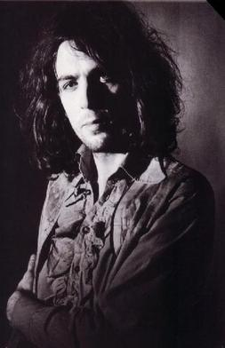
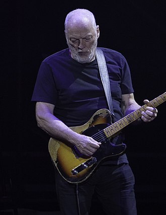
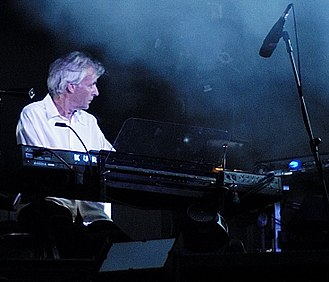
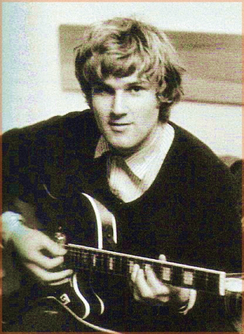
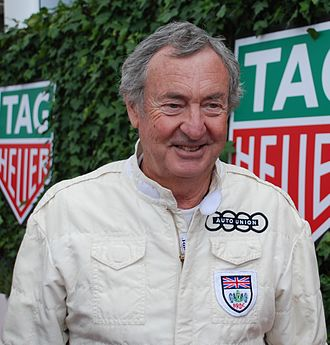

Ρότζερ Κηθ Μπάρετ
O Ρότζερ Κηθ Μπάρετ (Roger Keith "Syd" Barrett, 6 Ιανουαρίου 1946 - 7 Ιουλίου 2006), γνωστός περισσότερο ως Σιντ Μπάρετ (Syd Barrett), ήταν Βρετανός τραγουδιστής, κιθαρίστας και συνθέτης. Υπήρξε ένα από τα ιδρυτικά μέλη των Pink Floyd και μέλος του συγκροτήματος την τριετία 1965-1968. Το 1969 εγκατέλειψε τους Pink Floyd λόγω της εξάρτησής του στα ψυχεδελικά ναρκωτικά (με τους οποίους μάλιστα συνεργάστηκε ξανά το 1975 για το αφιερωμένο σε αυτόν τραγούδι Shine On You Crazy Diamond) και έκανε μια σύντομη σόλο καριέρα έως το 1975 οπότε και σταμάτησε τελείως την ενασχόλησή του με τη μουσική. Από τότε έως την 7η Ιουλίου 2006 έμενε μοναχός του στο σπίτι που είχε στο Κέμπριτζ.
Ντέιβιντ Τζον Γκίλμορ

Ο Ντέιβιντ Τζον Γκίλμορ (αγγλικά: David Jon Gilmour, Κέμπριτζ, 6 Μαρτίου 1946) είναι Βρετανός κιθαρίστας, τραγουδιστής και συνθέτης ο οποίος
έγινε γνωστός ως μέλος του συγκροτήματος Pink Floyd, στους οποίους εντάχθηκε στα τέλη του 1967 ως αναπληρωματικός κιθαρίστας του Σιντ Μπάρετ.
Λίγο αργότερα, όταν ο Μπάρετ εγκατέλειψε την μπάντα λόγω των προβλημάτων που είχε με το LSD, ο Γκίλμορ έγινε ο βασικός κιθαρίστας και βοηθός
του Ρότζερ Γουότερς στα φωνητικά. Πολλοί πιστεύουν πως το ταλέντο του ως συνθέτη βοήθησε τους Pink Floyd να γίνουν παγκοσμίως γνωστοί
(ιδιαίτερα με το άλμπουμ Dark Side of the Moon). Από το 1987 είναι αρχηγός των Pink Floyd, μετά και την αποχώρηση του Ρότζερ Γουότερς.
Έχει συνεργαστεί με πολλούς μεγάλους καλλιτέχνες όπως ο πρώην bandmate του Syd Barrett, την Kate Bush, Grace Jones, Tom Jones, Elton John, B.B. King,
Paul McCartney, John Lennon, Sam Brown, Jools Holland, Bob Dylan, Pete Townshend, The Who, Supertramp, Levon Helm, Robbie Robertson, Alan Parsons,
καθώς και με διάφορα προσωρινά συγκροτήματα που έδωσαν φιλανθρωπικές συναυλίες. Έχει εκδώσει 3 προσωπικά άλμπουμ και είναι ο ιδιοκτήτης της μεγάλης
αξίας Fender Stratocaster με σειριακό αριθμό 0001 (την πρώτη που βγήκε από γραμμή παραγωγής). Τέλος, θεωρείται από τους σημαντικότερους κιθαρίστες
του 20ού αιώνα, και έχει γράψει και εκτελέσει ένα από τα καλύτερα ηλεκτρικά σόλο κιθάρας (για πολλούς το καλύτερο ροκ σόλο κιθάρας),εκείνο του
Comfortably Numb, τραγουδιού τού συγκροτήματος στο οποίο ήταν βασικό μέλος, των Pink Floyd.
Ρότζερ Τζορτζ Γουώτερς

Ο Ρότζερ Τζορτζ Γουώτερς (αγγλικά: George Roger Waters, γενν. 6 Σεπτεμβρίου 1943) είναι από τα ιδρυτικά μέλη των Pink Floyd.
Έμεινε με το συγκρότημα από το 1965 έως το 1985 με πολύ μεγάλη επιτυχία. Έπαιζε μπάσο και έκανε και τα κύρια φωνητικά (μαζί με τον Γκίλμορ).
Ήταν επίσης υπεύθυνος για τους περισσότερους στίχους και το επικό μέγεθος των συναυλιών τους.
Η επιτυχία και εμπορικότητα των Floyd είχε αρχίσει να βαραίνει τους ώμους του πρώτα και κύρια καλλιτέχνη Γουώτερς.
Μετά τον γιγαντισμό των συναυλιών για το άλμπουμ The Wall και την πολύ μεγάλη διάδοση των τραγουδιών άρχισε να έχει προβλήματα με τα υπόλοιπα μέλη
του γκρουπ. Το άλμπουμ The Final Cut ήταν φτιαγμένο σχεδόν εξολοκλήρου από τον Γουώτερς, με τα υπόλοιπα μέλη να έχουν περιθωριακό ρόλο και να μην είναι
ικανοποιημένα.
Η κατάσταση οδήγησε σε πολλές τριβές και έτσι το 1985 ο Γουώτερς αποχώρησε από τους Floyd κάνοντας και μια απόπειρα να αποκτήσει τα εμπορικά δικαιώματα
του ονόματος, που όμως απέτυχε γρήγορα. Μετά το 1985 άρχισε σόλο καριέρα με όχι πολύ θεαματικά αποτελέσματα, αλλά με καλές κριτικές.
Στις 2 Ιουλίου 2005 επανενώθηκε προσωρινά με την υπόλοιπη μπάντα για την φιλανθρωπική συναυλία του Live 8 στο Λονδίνο. Στην Ελλάδα εμφανίστηκε στις
18 Ιουνίου 2006 στη Μαλακάσα, για μια ζωντανή εκτέλεση του The Dark Side of the Μoon αλλά και υλικού από τους προσωπικούς του δίσκους.
Στο πλαίσιο της παγκόσμιας περιοδείας “The Wall Live”, με αφορμή τη συμπλήρωση 30 χρόνων από τη δημιουργία του πολύ-πλατινένιου άλμπουμ των Pink Floyd,
ο Roger Waters έδωσε ακόμη μία συναυλία στην Ελλάδα, την Παρασκευή, 8 Ιουλίου 2011, στο Κλειστό Γήπεδο Μπάσκετ Ο.Α.Κ.Α.
Το οπτικοακουστικό υπερθέαμα «The Wall» του 2011 ,επαναλήφθηκε,ανασχεδιασμένο και με νέες προεκτάσεις στον ίδιο χώρο την Τετάρτη,31 Ιουλίου του 2013.
Ρίτσαρντ Ουίλλιαμ Ράιτ

O Ρίτσαρντ Ουίλλιαμ Ράιτ (αγγλικά: Richard William Wright, 28 Ιουλίου 1943 - 15 Σεπτεμβρίου 2008) ήταν Άγγλος μουσικός, που έπαιξε πιάνο
και πλήκτρα στο βρετανικό progressive συγκρότημα Pink Floyd. Ήταν ιδρυτικό μέλος του συγκροτήματος, στο οποίο συμμετείχε από το 1965 ώς το 1981
και ξανά από το 1987 ώς και το 1995. Ο Ράιτ σπούδασε αρχιτεκτονική στο Πολυτεχνείο Regent Street όπου γνώρισε άλλα δύο ιδρυτικά μέλη των Pink Floyd,
τους Ρότζερ Γουότερς και Νικ Μέισον. Ήρθε σε σύγκρουση με τον Γουότερς στα τέλη της δεκαετίας του '70 και αποχώρησε από το συγκρότημα κατά τη διάρκεια
των ηχογραφήσεων του The Wall το 1979. Παρέμεινε όμως στη σύνθεση ως επί πληρωμή session μουσικός για τις ανάγκες της ζωντανής εκτέλεσης του άλμπουμ
μέχρι το 1981. Το άλμπουμ The Final Cut του 1983, ήταν το μόνο των Pink Floyd που κυκλοφόρησε χωρίς τον Ράιτ στη σύνθεση. Ο Ράιτ ξαναγύρισε στο
συγκρότημα μετά την αποχώρηση του Γουότερς και παρέμεινε για τα επόμενα χρόνια, ενώ συμμετείχε και στην εμφάνιση του γκρουπ με την πλήρη του σύνθεση
το 2005 στο live 8.
Ο Ράιτ συμπλήρωνε με τζαζ και νεοκλασικά περάσματα στα πλήκτρα και το πιάνο τις κατά βάση μπλουζ μελωδίες που έγραφαν οι Γκίλμουρ και Γουότερς.
Είχε σημαντική συμμετοχή στο δίσκο Meddle καθώς και στο Dark side of the moon με τις συνθέσεις του The great gig in the sky και Us and them,
και ίσως η πιο γνωστή στιγμή του ήταν τα εκτεταμένα περάσματα των πλήκτρων στο άλμπουμ Wish you were here του 1975 καθώς και στο Animals του 1977.
Συνεισέφερε ακόμα με συνθέσεις στο άλμπουμ The division bell του 1994. Κυκλοφόρησε επίσης δυο προσωπικούς δίσκους, το Wet Dream το 1978 και Broken China
το 1996. Παντρεύτηκε τρεις φορές (1964-1982 με την Juliette Gale, 1984-1994 με την Ελληνίδα Franka, 1996-2008 με την Millie) και από τους γάμους
του απέκτησε τρία παιδιά. Πέθανε από καρκίνο στις 15 Σεπτεμβρίου του 2008 στο σπίτι του στην Αγγλία.
Μπομπ Κλόζε
Ο Rado Robert Garcia Klose είναι Άγγλος μουσικός, φωτογράφος και εκτυπωτής. Μεταξύ 1964 και Ιουλίου 1965, ήταν ο κύριος κιθαρίστας ενός πρώτου ροκ συγκροτήματος που αργότερα θα γίνει Pink Floyd Παρόλο που ηχογράφησε μερικά τραγούδια με αυτό το συγκρότημα, έφυγε πριν από τη μετατροπή τους σε Pink Floyd
Νίκολας Μπέρκλεϋ Μέισον
Ο Νίκολας Μπέρκλεϋ Μέισον (αγγλικά: Nicholas Berkeley Mason, 27 Ιανουαρίου 1944, Ετνγκμπάστον, Μπέρμινχαμ, Αγγλία) ήταν ο ντράμερ του ροκ συγκροτήματος των Pink Floyd και το μόνο μέλος του συγκροτήματος που ήταν παρόν καθ' όλη τη διάρκειά ύπαρξής του (1965-1995), έχοντας χαρακτηριστεί και «ενωτική δύναμη» της μπάντας. Έχει συμβάλλει σε τραγούδια όπως τα «Interstellar Overdrive», «Echoes», «Speak To Me», «One Of These Days» και έχει κάνει και φωνητικές εμφανίσεις στα «Signs Of Life» και «One Of These Days».